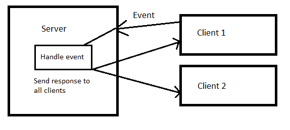

Connect 4 - Ville Paananen, L4079, TTV17S4, 2.12.2018
Johdanto
Connect 4 on Web-palvelinohjelmointikurssin TTMS0900 harjoitustyöseminaari.
Harjoitustyöseminaarin on tehnyt yksin Ville Paananen.
Itse sivusto
Projektin tarkoituksena oli tehdä monipelattava verkkopeli käyttäen NodeJS palvelinta,
Express frameworkkia ja Socket.io:ta.
Socket.io:lla on kaksi osaa, selaimessa suoritettu kirjasto sekä NodeJS palvelinkirjasto.
Näiden kahden osan välillä voidaan viestittää dataa reaaliajassa. Tämän avulla voimme tehdä
reaaliajassa pelattavan verkkopelin.
Pelin toiminta
Normaalisti kun painat vaikka "submit" nappia nettisivulla, se suorittaa toiminnon lokaalisesti. Socket.IO:n avulla teemme asiat toisin; Kun nappia painetaan, lähetetään palvelimelle tieto painalluksesta, jonka jälkeen palvelin lähettää komennon jokaiselle clientille, jotka kaikki suorittavat toiminnan lokaalisesti.
Ohjelma ja koodi
Projekti on tehty NodeJS:llä ja projektille olennaisimmat käytetyt paketit ovat:
Kansiorakenne
Toimintalogiikka
Käyttäjä aloittaa "Menu" -sivulta, josta pääsee eteenpäin kirjautumalla. Kirjauduttua käyttäjä ohjataan "Lobby" -sivulle, jossa käyttäjä pääsee käsiksi kaikkiin toimintoihin. Lobbyssä käyttäjä voi tehdä uuden pelin tai liittyä toisen käyttäjän tekemään peliin, jolloin hänet ohjataan "Game" -sivulle kyseiseen peliin. Game-sivulla käyttäjä pelaa toista käyttäjää vastaan reaaliajassa, ja halutessaan poistuu pelistä jolloin hänet ohjataan takaisin lobbyyn. Lobbyssä hän voi halutessaan myös kirjautua ulos, jolloin käyttäjä ohjataan Menu-sivulle.

Yhteenveto
- Lähdekoodi: Download zip
- Ajan käyttö: Työ aloitettu 5.10.2018, työ valmis 2.12.2018. Itse Connect 4 pelin olin koodannut valmiiksi ennen projektin aloitusta
-
Itsearvio:
- Ohjelma sisältää hyvin kurssin aiheita: palvelin(peli), käyttäjätilit ja authentikointi, tietokanta, cookiet, regex, hash, jne.
- Peli toimii ja koodi on kohtalaista.
- Palautettu 2 päivää myöhässä
- Projektin ulkonäkö kaipaa uudistusta (css)
- Arvosanaehdotus 3-4